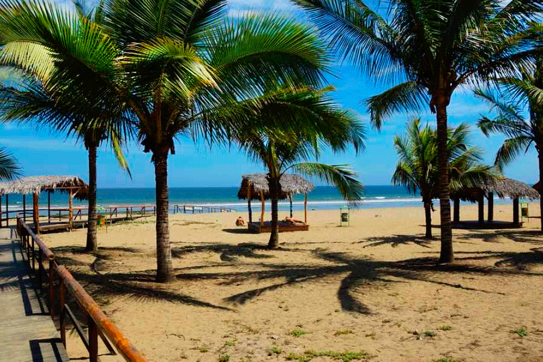
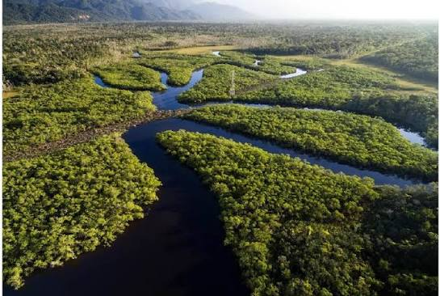

Costa del Pacífico
Hermosas playas, un clima cálido y ciudades llenas de vida. Famosa por sus mariscos frescos, el encebollado y el ambiente festivo de sus costas.
Descubre los rincones más icónicos de nuestro país a través de sus cuatro maravillosas regiones.

Hermosas playas, un clima cálido y ciudades llenas de vida. Famosa por sus mariscos frescos, el encebollado y el ambiente festivo de sus costas.

Imponentes volcanes, majestuosos nevados y ciudades coloniales con rica historia. Cuna del cuy asado, el locro de papas y el mote pillo.

Biodiversidad pura, selva virgen y comunidades ancestrales. Destaca por platillos únicos como el maito de pescado y la chicha de yuca.

Un paraíso natural único en el mundo con especies endémicas y paisajes volcánicos sin igual. Reconocida por su excelente langosta y mariscos.